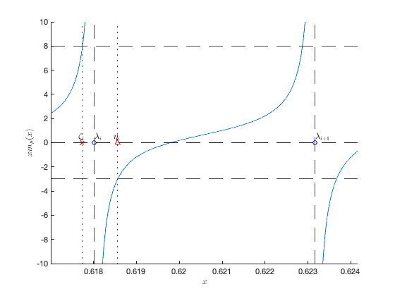

Section 3.2: Covariance distance estimation
This page contains simulations in Section 3.2: estimation of various distance between covariance matrices in large dimension
Contents
Visualization of behavior of 
close all; clear; clc coeff = 3; p = 100*coeff; n1 = 300*coeff; n2 = 900*coeff; c1 = p/n1; c2 = p/n2; rng(928); Z1 = randn(p,n1); Z2 = randn(p,n2); eig_C1 = [1,2,4]; eig_C2 = [1,3,5]; C1 = diag([eig_C1(1)*ones(p/3,1); eig_C1(2)*ones(p/3,1); eig_C1(3)*ones(p/3,1)]); C2 = diag([eig_C2(1)*ones(p/3,1); eig_C2(2)*ones(p/3,1); eig_C2(3)*ones(p/3,1)]); X1 = sqrtm(C1)*Z1; X2 = sqrtm(C2)*Z2; SCM1 = X1*(X1')/n1; SCM2 = X2*(X2')/n2; SCM = SCM1\SCM2; eigs_SCM = eig(SCM); eigs_SCM = sort(eigs_SCM); m = @(x) sum(1./(eigs_SCM-x))/p; x_m = @(x) x.*m(x); tol1 = 1e-3; index_eigs_SCM = 50; zoom_eigs_SCM = linspace(eigs_SCM(index_eigs_SCM)-tol1,eigs_SCM(index_eigs_SCM+1)+tol1,1000); tol2 = 1e-4; zoom_eigs_SCM(zoom_eigs_SCM<=eigs_SCM(index_eigs_SCM)+tol2 & zoom_eigs_SCM>=eigs_SCM(index_eigs_SCM)-tol2)=NaN; zoom_eigs_SCM(zoom_eigs_SCM<=eigs_SCM(index_eigs_SCM+1)+tol2 & zoom_eigs_SCM>=eigs_SCM(index_eigs_SCM+1)-tol2)=NaN; % numerical evaluation of eta and zeta eta = real(eig(diag(eigs_SCM) + sqrt(eigs_SCM)*sqrt(eigs_SCM')/(n1-p))); eta = eta(eta<eigs_SCM(index_eigs_SCM+1) & eta>eigs_SCM(index_eigs_SCM)); zeta = real(eig(diag(eigs_SCM) - sqrt(eigs_SCM)*sqrt(eigs_SCM')/(n2))); zeta = zeta(zeta<eigs_SCM(index_eigs_SCM) & zeta>eigs_SCM(index_eigs_SCM-1)); figure hold on plot(zoom_eigs_SCM, x_m(zoom_eigs_SCM)); xline(eigs_SCM(index_eigs_SCM),'--k'); xline(eigs_SCM(index_eigs_SCM+1),'--k'); yline(0,'--k'); yline( (1-c2)/c2,'--k'); yline( -1/c1,'--k'); yline(0,'--k'); axis([eigs_SCM(index_eigs_SCM)-tol1 eigs_SCM(index_eigs_SCM+1)+tol1 -10 10]) xlabel('x', 'Interpreter', 'latex') ylabel('$x m_{\mu}(x)$', 'Interpreter', 'latex') plot(eigs_SCM(index_eigs_SCM),0,'ob'); text(eigs_SCM(index_eigs_SCM)+1e-5,.5,'$\lambda_i$', 'Interpreter', 'latex', 'FontSize',12) plot(eigs_SCM(index_eigs_SCM+1),0,'ob'); text(eigs_SCM(index_eigs_SCM+1)+1e-5,.5,'$\lambda_{i+1}$', 'Interpreter', 'latex', 'FontSize',12) plot(eta, 0,'xr'); plot(zeta, 0,'xr'); text(eta-1e-4, .5,'$\eta_i$', 'Interpreter', 'latex', 'FontSize',12) text(zeta-1e-4, .5,'$\zeta_i$', 'Interpreter', 'latex', 'FontSize',12) xline(eta,':k'); xline(zeta,':k');
Classical versus random matrix improved covariance distance estimator
close all; clear; clc p_loop = 2.^(1:9); n1 = 1024; n2 = 2048; rng(928); nb_average_loop = 30; store_output = zeros(length(p_loop),3); % [population distance, RMT estimator, classical estimator] for i = 1:length(p_loop) p = p_loop(i); C1 = toeplitz(0.2.^(0:p-1)); C2 = toeplitz(0.4.^(0:p-1)); f = @(z) log(z).^2; % Fisher distance tmp = zeros(3,1); for j = 1:nb_average_loop X1 = sqrtm(C1)*randn(p,n1); X2 = sqrtm(C2)*randn(p,n2); [RMTDistEst,ClassDistEst] = RMTCovDistEst(X1,X2,'Fisher'); tmp = tmp + [mean(f(eig(C1\C2))); RMTDistEst; ClassDistEst]/nb_average_loop; end store_output(i,:) = tmp; end disp('Performance of different estimators:') disp([p_loop', store_output])
FUNCTIONS
Code from https://github.com/maliktiomoko/RMTEstimCovDist
function [RMTDistEst,ClassDistEst] = RMTCovDistEst(X1,X2,distance) %RMTCovDistEst: random matrix-based improved estimators of distances %between covariances %INPUT: X1 (input data of covriance C1), X2 (input data of covriance C2), %distance (different types of distances under consideration) n1=size(X1,2); n2=size(X2,2); p=size(X2,1); switch distance case 'Fisher' f = @(t) log(t).^2; case 'bhattacharrya' f = @(t) -1/4*log(t)+1/2*log(1+t)-1/2*log(2); case 'KL' f = @(t) 1/2*t-1/2*log(t)-1/2; case 't' f = @(t) t; case 'log' f = @(t) log(t); case 'log(1+st)' s = 1; f = @(t) log(1+s*t); end c2=p/n2; c1=p/n1; hatC1=1/n1*(X1*X1'); hatC2=1/n2*(X2*X2'); F=hatC1\hatC2; lambda=sort(eig(F)); slambda=sqrt(lambda); eta = sort(eig(diag(lambda)-slambda*slambda'/(p-n1))); zeta = sort(eig(diag(lambda)-slambda*slambda'/n2)); m = @(z) mean(1./(lambda*ones(1,length(z))-ones(p,1)*z)); phi=@(z) z+c1*z.^2.*m(z); psi=@(z) 1-c2-c2*z.*m(z); switch distance case 'Fisher' M=zeros(p); N=zeros(p); for i=1:p M(i,i)=1/(2*lambda(i)^2); N(i,i)=1/lambda(i); js=1:p; js(i)=[]; for j=js M(i,j)=(-1+lambda(i)/lambda(j)-log(lambda(i)/lambda(j)))/(lambda(i)-lambda(j))^2; N(i,j)=log(lambda(i)/lambda(j))/(lambda(i)-lambda(j)); end end % Large p-estimate RMTDistEst=2*(c1+c2-c1*c2)/(c1*c2)*( (eta-zeta)'*M*(eta-lambda)+(eta-lambda)'*(log((1-c1)*lambda)./lambda) )... -2/p*(eta-zeta)'*N*ones(p,1)+1/p*sum(log((1-c1)*lambda).^2)... -2*(1-c2)/c2*( 1/2*log( (1-c1)*(1-c2) )^2+(eta-zeta)'*(log((1-c1)*lambda)./lambda) ); ClassDistEst=mean(f(lambda)); case 'log(1+st)' % additional kappa term in negative side s=1; kappa_p=0; kappa_m=-1/(s*(1-c1)); if c2>1 kappa_p=min(lambda(lambda>1e-3)); while phi(kappa_m)/psi(kappa_m)>-1/s kappa_m=2*kappa_m; end end while abs(kappa_p-kappa_m)>1e-6*abs(eta(p)-zeta(p)) kappa_=(kappa_p+kappa_m)/2; if phi(kappa_)/psi(kappa_)<-1/s kappa_m=kappa_; else kappa_p=kappa_; end end kappa_0=(kappa_p+kappa_m)/2; RMTDistEst=(c1+c2-c1*c2)/(c1*c2)*log((c1+c2-c1*c2)/(1-c1)/abs(c2-s*c1*kappa_0))+1/c2*log(abs(-s*kappa_0*(1-c1)))+1/p*sum(log(abs(1-lambda/kappa_0))); ClassDistEst=mean(f(lambda)); case 'bhattacharrya' RMTDistEst=(-1/4)*RMTCovDistEst(X,Y,'log')+1/2*RMTCovDistEst(X,Y,'log(1+st)')-1/2*log(2); ClassDistEst=mean(f(lambda)); case 'KL' RMTDistEst=1/2*((1-c1)*mean(lambda)-mean(log(lambda))+(1-c1)/c1*log(1-c1)-(1-c2)/c2*log(1-c2)-1); ClassDistEst=mean(f(lambda)); case 't' RMTDistEst=(1-c1)*mean(lambda); ClassDistEst=mean(f(lambda)); case 'log' RMTDistEst=1/p*sum(log(lambda))-(1-c1)/c1*log(1-c1)+(1-c2)/c2*log(1-c2); ClassDistEst=mean(f(lambda)); case 'Wasserstein' [RMTDistEst,ClassDistEst]=RMTWassDist(X1,X2); end end function [RMTDistEst,ClassDistEst] = RMTWassDist(X1,X2) %Function that compute the Wasserstein distance between Gaussian centered %distribution based on the article Random Matrix-Improved Estimation of the Wasserstein Distance %between two Centered Gaussian Distribution (Malik TIOMOKO & Romain Couillet) %Input samples from the first class X1 of dimension p*n1 and the %samples from the second class X2 of size p*n2 p=size(X1,1); n1=size(X1,2); n2=size(X2,2); c1=p/n1;c2=p/n2; %Sample covariance estimate hatC1=X1*X1'/n1;hatC2=X2*X2'/n2; lambda=sort(eig(hatC1*hatC2)); m=@(z) mean(1./(lambda-z)); phi=@(z) z./(1-c1-c1.*z.*m(z)); psi=@(z) 1-c2-c2*z.*m(z); f=@(z) sqrt(z); eta=sort(real(eig(diag(lambda)-(1/n1)*sqrt(lambda)*sqrt(lambda)'))); zeta=sort(real(eig(diag(lambda)-(1/n2)*sqrt(lambda)*sqrt(lambda)'))); phi_test=@(z) z; psi_test=@(z) 1; phipsi=@(z) sqrt(z)/(c2); for i=1:length(lambda) phi_test=@(z) phi_test(z).*((z-lambda(i))./(z-eta(i))); psi_test=@(z) psi_test(z).*(z-zeta(i))./(z-lambda(i)); phipsi=@(z) phipsi(z).*sqrt((z-zeta(i))./(z-eta(i))); end % Distinguish the case where n1<n2 to the case where n1>n2 if eta(1)<zeta(1) my_eta=zeta; my_zeta=eta; else my_zeta=zeta; my_eta=eta; end other=@(z) 2*sum(1./(z-zeta))-2*sum(1./(z-lambda)); integrand_real=@(z) (1/(2*pi))*2*f(-(phi(z)./psi(z))).*other(z).*(psi(z)/c2); %Computing the second term (real_integral) real_integral=0; for i=1:length(my_zeta) real_integral=real_integral+integral(integrand_real,my_zeta(i),my_eta(i)); end %Computing the first term (pole in lambda) pole=2*(sqrt(c2/c1))*sum(sqrt(lambda))/c2; esty=pole+real_integral; RMTDistEst=(1/p)*trace(hatC1+hatC2)-2*esty; %Distinguish the case n1=n2 if n1==n2 RMTDistEst=(1/p)*trace(hatC1+hatC2)-2*(sum(sqrt(lambda))-sum(sqrt(zeta)))*(2*n1/p); end %Classical estimate ClassDistEst=(1/p)*(trace(hatC1)+trace(hatC2)-2*trace((hatC1^(1/2)*hatC2*hatC1^(1/2))^(1/2))); end
Performance of different estimators:
2.0000 0.0533 0.0524 0.0568
4.0000 0.0796 0.0840 0.0913
8.0000 0.0927 0.0917 0.1048
16.0000 0.0992 0.1007 0.1253
32.0000 0.1025 0.1029 0.1509
64.0000 0.1042 0.1049 0.2009
128.0000 0.1050 0.1044 0.3023
256.0000 0.1054 0.1057 0.5341
512.0000 0.1056 0.1086 1.1556